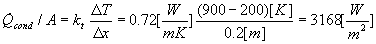
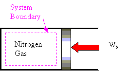
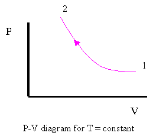
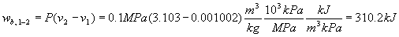
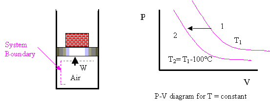

MODULE 4: FIRST LAW OF THERMODYNAMICS APPLIED
TO CLOSED SYSTEMS
(fragments of the CD that comes with
Cengel&Boles's book "Thermodynamics", 3-d edition, McGraw-Hill,
1998)
Example 1
A flat wall is composed of 20 cm of brick (k = 0.72 W/(mK), see
Table 3-1). The right face temperature of the brick is 900°C, and the left face
temperature of the brick is 20°C. Determine the rate of heat conduction through
the wall per unit area of wall.

Example 2
A vehicle is to be parked overnight in the open away from large surrounding objects. It is desired to know if dew or frost may form on the vehicle top. Assume the following.
Convection coefficient, h, from ambient air to vehicle top is 6.0 W/m2 °C.
Equivalent sky temperature is -18°C.
Emissivity of vehicle top is 0.84.
Negligible conduction from inside vehicle to top of vehicle.
Determine the temperature of the vehicle top when the air temperature is 5 F. State which formation (dew or frost) occurs.
Under steady-state conditions the energy convected to the vehicle top is equal to the energy radiated to the sky.
The energy convected from the ambient air to the vehicle top is
The energy radiated from the top to the night sky is
Setting these two heat transfers equal gives
 Write the equation for Ttop in °C (T K = T°C + 273)
Write the equation for Ttop in °C (T K = T°C + 273)
Since Ttop is below the triple point of water, 0.01°C, the water vapor in the air will form frost on the car top.
Example 3
Three kilograms of nitrogen gas at 27 ºC, 0.15 MPa are compressed isothermally to 0.3 MPa in a piston-cylinder device. Determine the minimum work of compression, in kJ.
System: Nitrogen contained in a piston-cylinder device.
Process: Constant temperature


Property Relation: Check the reduced temperature and pressure for nitrogen.
Since PR<<1 and T>2Tcr, nitrogen is an ideal gas, and we use the ideal gas equation of state as the property relation.
Work Calculation:
For an ideal gas in a closed system (mass = constant), we have
Since the R's cancel and T2 = T1
The net work is
On a per unit mass basis
The net work is negative because work is done on the system during the compression process. Thus, the work into the system is
Or, 184.5 kJ of work energy is required to compress the nitrogen.
Example 4
Water is placed in a piston-cylinder device at 20ºC, 0.15 MPa. Weights are placed on the piston to maintain a constant force on the water as it is heated to 400ºC. How much work does the water do on the piston?
System: The water contained in the piston-cylinder device
Property Relation: Steam Tables
Process: Constant pressure
Work Calculation:
Since there is no Wother mentioned in the problem, the net work is
Since the mass of the water is unknown, we calculate the work per unit mass.
At T1 = 20ºC, P sat = 2.339 kPa. Since P1 > 2.339 kPa, state 1 is compressed liquid. Thus,
v1 = vf at 20°C = 0.001002 m3/ kg
At P 2 = P1 = 0.1 MPa, T2 > Tsat at 0.1 MPa = 99.63ºC.
So, state 2 is superheated. Using the superheated tables,
v2 = 3.103 m3/kg
The water does work on the piston in the amount of 310.2 kJ.
Example 5
One kilogram of water is contained in a piston-cylinder device at 100ºC. The piston rests on lower stops such that the volume occupied by the water is 0.835 m3. The cylinder is fitted with an upper set of stops. When the piston rests against the upper stops, the volume enclosed by the piston-cylinder device is 0.841 m3. A pressure of 200 kPa is required to support the piston. Heat is added to the water until the water exists as a saturated vapor. How much work does the water do on the piston?
System: The water contained in the piston-cylinder device
?
Property Relation: Steam tables
Process: Combination of constant volume and constant pressure processes to be shown on the P-v diagram as the problem is solved
Work Calculation:
The specific volume at state 1 is
At T1 = 100°C,
Therefore, vf < v1 < vg and state 1 is in the saturation region; so, P1 = 101.35 kPa.
Now let's consider the processes for the water
Process 1-2: The volume stays constant until the pressure increases to 200 kPa. Then the piston will move.
Process 2-3: Piston lifts off the bottom stops while the pressure stays constant. Does the piston hit upper stops before or after reaching the saturated vapor state?
Let's set 

At P3 = P2 = 200 kPa
Thus, vf < v3 < vg. So, the piston hits the upper stops before the water reaches the saturated vapor state. Now we have to consider a third process.
Process 3-4: With the piston against the upper stops, the volume remains constant during the final heating to the saturated vapor state and the pressure increases.
Because the volume is constant in process 3 to 4, v4 = v3 = 0.841 m3/ kg and v4 is a saturated vapor state. Interpolating in either the saturation pressure table or saturation temperature table at v4 = vg gives
The net work for the heating process is (the "other" work is zero)
Later, we will apply the conservation of energy, or first law, to this process to determine the amount of heat transfer required.
Example 6
Air undergoes a constant pressure cooling process in which the temperature decreases by 100ºC. What is the magnitude and direction of the work for this process?
System:

Property Relation: Ideal gas Law, Pv=RT
Process: Constant pressure
Work Calculation: Neglecting the "other" work
The work per unit mass is
The work done on the air is 28.7 kJ/kg.